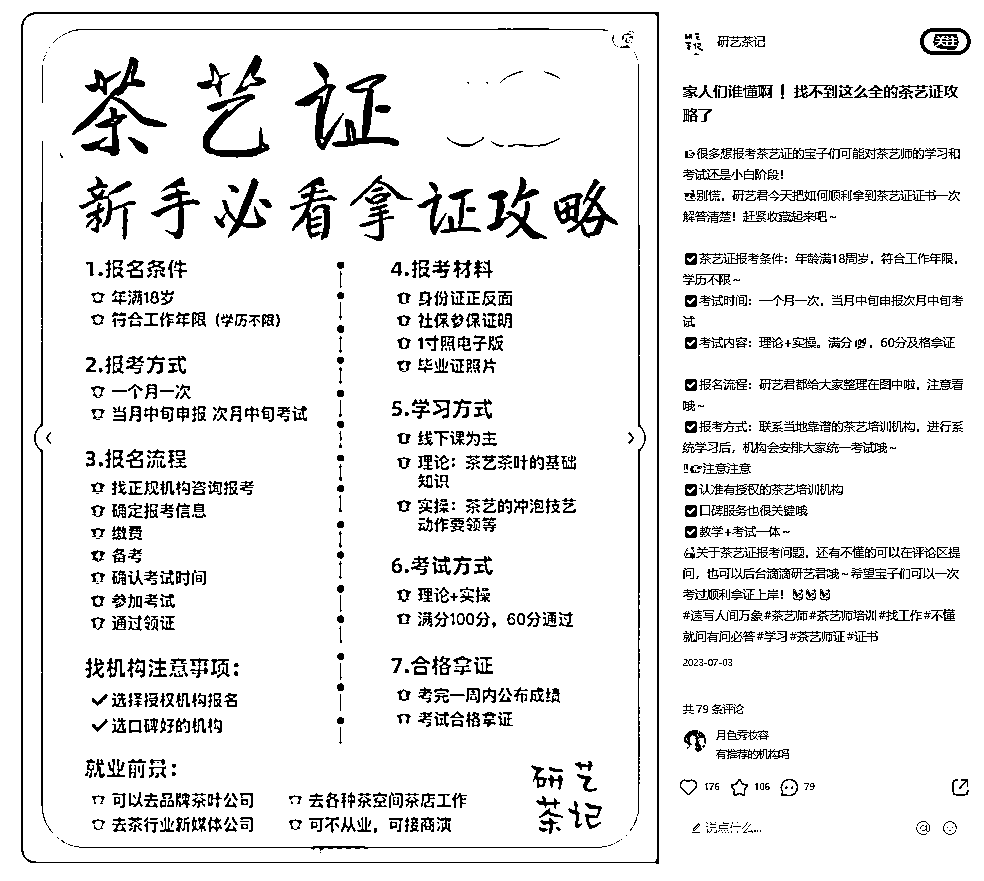
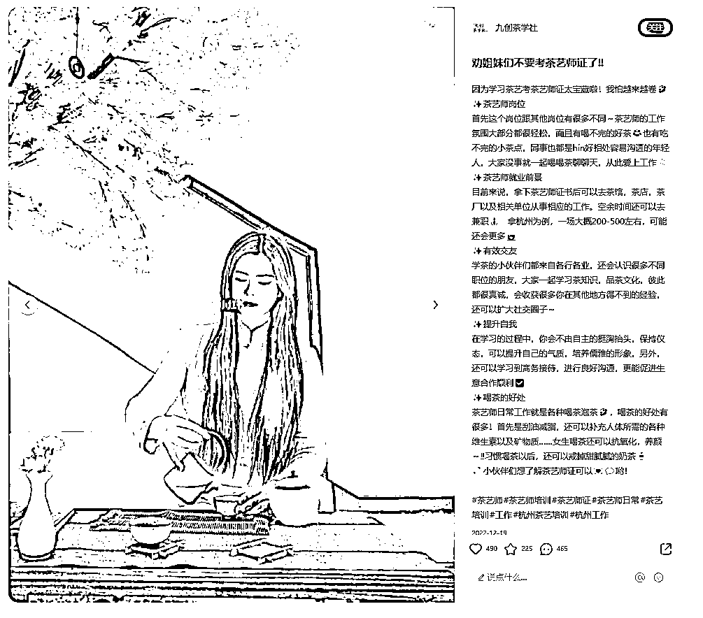
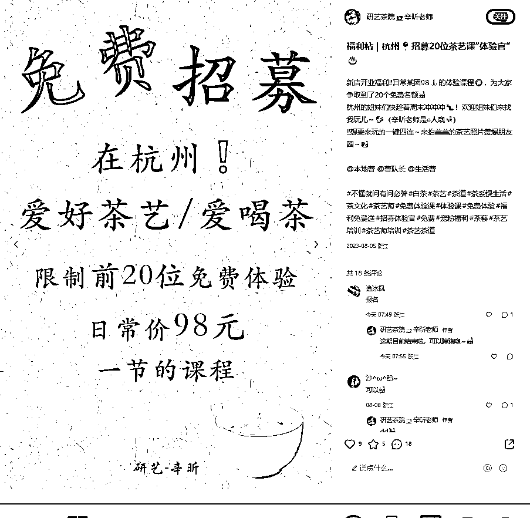

来源：https://d1nvyplw9g7.feishu.cn/docx/LymIdItuwo6hSqxZxlncZWoDnpe
精准对标账号的意思是，做完全一样的业务的，就是做线下培训考证的，来小红书的目的就是引流获客。
找到三种形式的账号
1.品牌号（直接以品牌命名，有长期内容规划，分享行业知识政策，课程详情，店内日常活动，数据好些能过审的投流）
2.老师人设号（以老师＋品牌的方向，主要是老师个人关于这个行业的看法及日常培训分享，及行业知识分享，建立对老师的信任感产生咨询）

3.个人分享号（很简单，按照关键词去铺笔记就好，以补贴，好处等利益点命题吸引流量，用差不多内容模板，不需要注意什么老师号的形象，品牌号的品牌感，就是大量发吸引人的标题就好）
1.作图表型（内容为行业知识或者报考攻略型，用图怪兽，可画等作图软件简单做出，可以先保存其他人的内容用视图变文字导出内容，做一半更改再排版成自己的）

2.突出利益点型（补贴好处反复去讲，只是需要换一个标题）

3.视频类（图文做过的可以把内容改成脚本，视频再讲一遍，主要用在老师人设账号）
杭州茶艺培训在小红书做的比较好只有九创，现在九创账号比较多，账号矩阵已经成型，但是账号内容区分不大，关键词占领意识薄弱只是笔记数量多，现在搜索就是九创。所以现在我们要用更精细化的内容固化和抢占关键词去做。
九创账号分析
品牌号（以九创汇茶空间为品牌，最开始占领茶艺培训相关关键词，最近开始占领女生考证，女生职业等关键词，配合投流，投流月消耗3000，稳定输出笔记两个月后单月此账号可以加150~200人到微信)

品牌号（以研艺茶学为品牌，主要为另一家店引流，因为吃的是同一个城市流量，所以区分两个品牌，有客户在咨询过九创后，还想了解其他商家如果看的还是九创就不会产生咨询，看到不一样的研艺就会咨询虽然咨询下来也是一样的情况，但是会感觉都是这家的账号可能做的比较大靠谱）
老师人设号(还没有做的比较好的老师人设号，因为老师人设号比较难做，需要做内容本身对茶艺培训非常了解，对老师也比较了解，两人配合输出内容，咨询也不如标题党类账号来的快，但是这是个长期的事情，后面往多店发展建议做)
标题党个人号（以老师或者品牌命名，但是不用真的做相关内容规划，只是想各种吸引人的标题来获取流量）
其他推广方法: 体验课邀约，（所有账号去发布体验课邀约，主要模式是，账号发布免费的体验课邀约笔记，一期设置人数限制比如20人，所有因为免费体验课过来的用户微信打标签区分，前20名邀约到店体验但是在之前说明需要美团预约评价，以及体验后发布小红书体验感受。用户体验过程中拍照方便后面用户发布宣传，也可以试着销售转化正课，但不要太刻意，后面因为体验课来的用户先告知会定期开体验课，这期活动满了，可以等后面体验，这样可以获取大量的美团和小红书好评，也会有一定概率转化为正课学员）

总结：杭州两家店，在小红书用，2个品牌号，2个老师号，3到5个标题党个人号，后面会两三个品牌号开白做投流，一个投流的账号可以引流200左右，其他全部账号大概100左右。
1.核心关键词：行业领域直接关键词，比如，茶艺，茶艺师，茶艺师证，茶艺培训，中级茶艺师，
2.长尾关键词：和核心关键词相关。比如，茶艺怎么学，茶艺师赚钱吗，茶艺师证怎么考，
3.功能词营销词：比如茶艺师证的，好处，提升气质，修身养性，掌握技能，领取补贴等
4.痛点需求词，比如茶艺培训的，含金量，怎么考，课程内容，机构，费用
5.细分关键词：目标用户的身份，使用场景等，比如打工人，职场人，宝妈，爱好茶，刚入茶行业
1.卖点+功能词/用户痛点
两周考下茶艺师领1500，杭州打工人别错过‼️
2.用户痛点+长尾关键词
女生提升考个茶艺师，培养气质还能领补贴
3.细分关键词+核心关键词/长尾关键词
茶小白报名中级茶艺师怎么考
4.长尾关键词＋功能性营销词
茶艺培训课程分享，选好机构费用还不坑
①笔记标题
标题中的关键词，是比较好收录的，但因为标题点击率影响比较大，再加上在文字开头的前50个字里，在保证文章通顺的前提下加入关键词。
.
②笔记封面图片
图片中的文字，也是可以被抓取到的，在不影响图片美观的前提下加入关键词。
.
③笔记正文内容
笔记内容中的话题，在笔记的后面加入相关的话题标签，这一类本身也容易被收录在一起。（不要堆砌到处都是，保证语言顺畅）
.
④笔记地址定位
因为做的是同城业务加上地址。
.
⑤小红书账号
本身做的同城业务可以以地区＋品牌命名，比如杭州， ，茶学
①账号搭建五件套
不管我们是做什么赛道，大多数的赛道,尤其是我们上千的高客单价的赛道，我们是否专业，是用户判断自己是否选择你的重要原因，所以人设最重要的一-点就是要有专业度，那么要怎么让自己看起来很专业呢?
这就需要我们在人设五件套里下功夫，也就是一头像、昵称、简介、背景和瞬间。
1.头像。品牌号直接用品牌logo就好，人设号选择有行业特征的照片，比如老师培训时的照片，行业高光时刻的照篇，记得生活化一些，没必要专门去照相馆拍很正式的照片，然后以此作为头像，既能体现自己专业性，又能拉进与用户之间的亲切感;
2.昵称。昵称这一款人设号建议就是:你的工作身份+昵称，直接点名自己是茶艺培训老师，
截了当的告诉用户我是谁，我的工作身份是什么;
品牌号是，业务＋品牌名称是什么
3.简介。就是简介，简介的内容是非常重要的，也是用户决定要不要关注咨询你的重要依据。
人设号简介主要是由两部分构成一专业背书和与用户共情。
专业背书就是写上自己在专业领域内取得的成绩或证书，从事这个行业的年限等,以此来让用户对你产生信任。
与用户共情，就是把一些你经历过的且你的目标用户很大几率会经历的事情表述出来，让用户由此来产生共情，拉近你们之间的距离。
4.背景。背景- -定要设置，而且最好是放能加强你人设的照片。比如放了一张培训时的照片，目的有两个。
一是告诉用户:你看，我自己是开了做茶艺培训的，我是值得信任的;
二是让我的用户知道我是某一个茶艺培训机构的老师，可以来找我学习茶艺考茶艺证。
所以，别小瞧你的背景图能给到用户的信息，而且你只是放了一-张图，剩下的信息用户自己会产生联想，这比你直接用文字告诉Ta，可信度更高。
5.瞬间。很多小红书博主都没有设置瞬间，白白浪费了一-个好的广告位。
瞬间我们可以隐晦的放联系方式，放用户的真实案例等，是一个提高增加信任感和提高转化率的好方法。
根据前面找的对标账号，去结合自己的业务输出内容，有对标的情况下，大概半月10篇内容就会稳定的客户咨询。
如果发现平台的对标账号很少，但是有不少素人发帖，评论区对本业务咨询业有，那不要犹豫，立刻去做，绝对蓝海。但是这种情况对内容产出要求高，毕竟要自己摸索内容，一般一个月20篇内容可以找到感觉，有稳定的咨询。
品牌号：品牌号是官方开白过的，有评论或者私信可以根据咨询的问题直接回复，问怎么报名的，可以直接引导加微信，加微信，用同音字或者符号代替，发完加微信大概两三个小时没有回复的，要跟进，聊天界面截图问有没有收到消息。
询问其他问题，回答问题后，紧跟引导加微信。
人设号：人设号简介@开白过的主账号，在发文章时候加地址标签，加主账号标签
评论回复：直接在评论区回复：给您发消息啦，在私信他:您好呀，是想了解茶艺培训嘛，小红书平台限制，您留个📞或VX，我们老师给您详细介绍下呀。
小红书群搭建：建立小红书群聊，发笔记时带上群聊，有些想了解的会进去群聊，定期的在群聊里发一些自己发过的笔记或者日常培训的图片，然后留下联系方式。
小红书建群及笔记挂群方法
个人号标记企业号方法（发布笔记处标记，标记后用户点击标记可以直接跳转笔记的主页）
通过这一套流程下来后可以摸索出整个业务在小红书引流到微信的大体数据，再去做精细化运营，是否可以多开账号，开几个投流账号，根据利润去看是否扩大业务。
根据这一年小红书引流获客的实战经历，总结出主做女性业务，高客单，业务符合小红书平台准入规则，那一定要试试，小红书可能带你的业务走向一个新高度。
有业务想要尝试小红书引流获客欢迎交流。